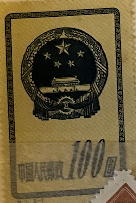
| SOURCE | TITLE| IMAGE MATCH | click to source page |
| Xabusiness.com | S1 Scott 117-121 National Emblem - China Stamps | 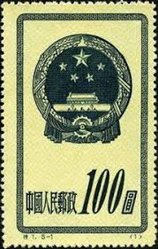 |
| HipStamp | China Stamps: 1951 Sc#120 National Emblem Mint Stamps- 69 Years OLD Stamp | Asia - China, General Issue Stamp / HipStamp | 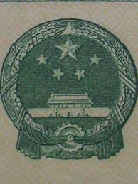 |
| eBay | PR China Stamps S1 Emblem, S2 Reform, S3 Dunhuang Murals,S4 Gymnastic特1, 2, 3, 4 | eBay | 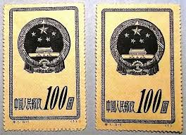 |
| HipStamp | China Stamp:2004-International Stamp & Coins Expo Beijing 2004 MNH S/S NO.2 | Asia - China, Stamp / HipStamp | 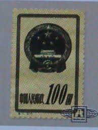 |
| HipStamp | China-1983- Sc#1894-5- National Stamps Show, Chinapex'83 on First DAY Covers | Asia - China, Stamp / HipStamp | 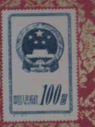 |
| HipStamp | China-1951-Sc#121 -National Emblem With Border MNH VF WE Ship to Worldwide | Asia - China, General Issue Stamp / HipStamp | 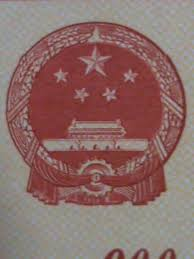 |
| WordPress.com | educational standards | Theodore Dalrymple writes: |  |
| Numista | 2000 Yuan (Year of the Dragon) - People's Republic of China – Numista | 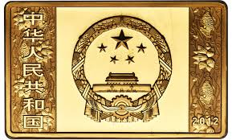 |
| Numista | 2000 Yuan (Year of the Snake) - People's Republic of China – Numista |  |
| China Ships dual-use Goods to Russia; Will the US and EU now impose… | Kenneth Rijock | 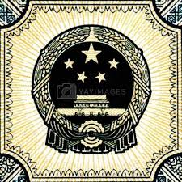 | |
| Numista | 50 Yuan (Year of the Snake) - People's Republic of China – Numista | 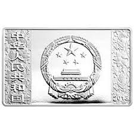 |
| Xabusiness.com | C68 Scott 441-444 10th Anniv. of Founding of PRC(2nd Set) - China Stamps | 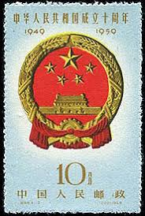 |
| eBay | 56793 China Stamp 1959 4c UNH Beautiful Stamp Coll SP* | eBay | 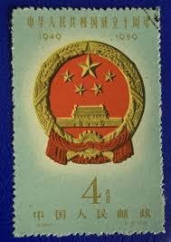 |
| Numista | 50 Yuan (Year of the Ox) - People's Republic of China – Numista | 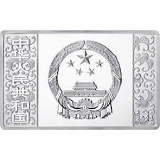 |
| eBay | 1 Stamp Chinese Stamps for sale | eBay | 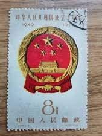 |
| Numista | 100 Yuan (Basketball) - People's Republic of China – Numista | 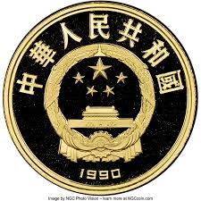 |
| Numista | 5 Yuan (The 600th Anniversary of the Forbidden City) - People's Republic of China – Numista | 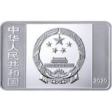 |
| PicClick | CHINA EX OLD Time Selection of Used & Mounted Mint examples. (74) $1.34 - PicClick |  |
| China Passport with a Chinese visa sticker : r/PassportPorn | 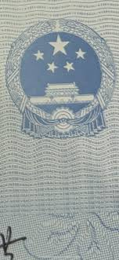 | |
| AbeBooks | Handbook on People's China. by China -: (1957) | Rödner Versandantiquariat | 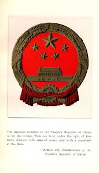 |
| Numista | 100 Yuan (60th Anniv of the Liberation of Tibet) - People's Republic of China – Numista | 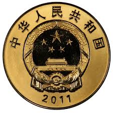 |
| 清华大学 | Create for China, Create for People: Works of Academy of Arts & Design, Tsinghua University | 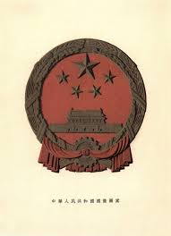 |
| Amazon.com | Amazon.com: Eduardo Mújica López: books, biography, latest update | 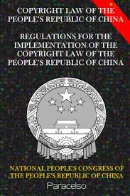 |
| MutualArt | Sun Chuanzhe | 3 Artworks at Auction | MutualArt |  |
| Carousell | China Stamps C68 CTO NH, Hobbies & Toys, Memorabilia & Collectibles, Stamps & Prints on Carousell |  |
| Wikimedia.org. | Category:National emblem of the People's Republic of China - Wikimedia Commons |  |
| eBay | 56795 China Stamp 1959 8c UNH Beautiful Stamp Coll SP* | eBay | 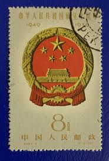 |
| Numista | 10 Yuan (Millennium of China's Paper Currency) - People's Republic of China – Numista | 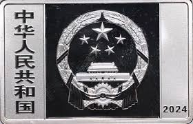 |
| NGC | China, People'S Republic 2000 Yuan KM 1885 Prices & Values | NGC | 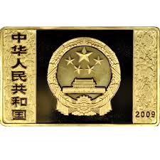 |
| NGC | China, People'S Republic 200 Yuan KM 1965 Prices & Values | NGC | 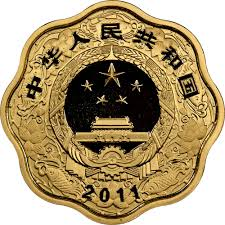 |
| Numista | 1 Yuan (Equestrian) - People's Republic of China – Numista | 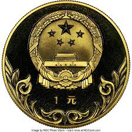 |
| Dreamstime.com | Five Chinese Yuan Renminbi RMB Banknote on Macro. Stock Image - Image of bank, banking: 124040911 | 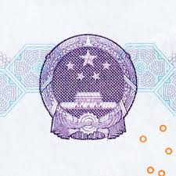 |
| Numista | 2000 Yuan (Xu Beihong) - People's Republic of China – Numista | 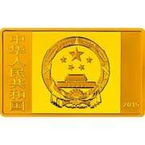 |
| HipStamp | China Stamp: 1959 Sc#443 10th Anniversary of China Cto-Mnh Stamp. Very Rare. | Asia - China, General Issue Stamp / HipStamp | 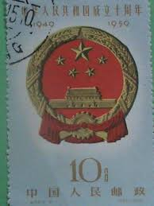 |
| eBay | 12424)) VR China Mi 122-126 II, ohne Gummi wie verausgabt | eBay |  |
| NGCcoin.hk | Chinese Coins: Year of the Horse Coins Gallop In | NGC |  |
| eBay | 1987 PRC China Silver 5 Yuan - Poet Du Fu - KM-175 - .643 oz ASW - SKU-F3850 | eBay | 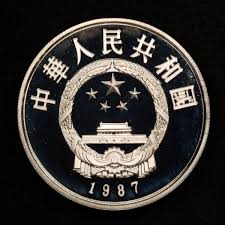 |
| Numista | 100 Yuan (25th Anniversary of WWF - Yak) - People's Republic of China – Numista | 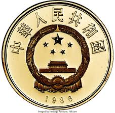 |
| Numista | 100 Yuan (Wu Zetian “The Iron Lady” 603-705AD, Stateswoman) - People's Republic of China – Numista | 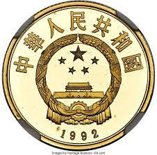 |
| Emperio Gold and Silver Coins | China 2014 Rectangle Horse Silver 5 oz | Emperio Gold and Silver Coins | 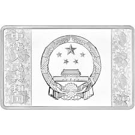 |
| HipStamp | China-2004-Sc#3392-3 China Flag & National Symbols Large. Mnh- S/S-Vf-Rare | Asia - China, General Issue Stamp / HipStamp | 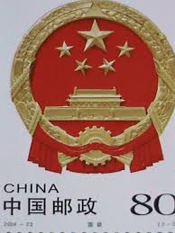 |
| NGC | NCS Conservation Showcase: China 1984 Gold 100 Yuan Haungdi | NGC | 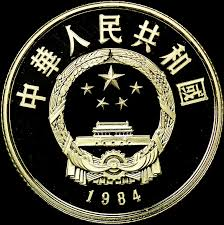 |
| NGC | China, People'S Republic 50 Yuan KM 1917 Prices & Values | NGC | 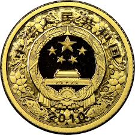 |
| Power Coin | Chinese lunar year (19) | 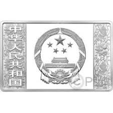 |
| Hong Kong GeoExpat | can my bf sponsor me, he has a yellow cover HK (passport look-like book) ? not a passport, I think - Hong Kong Forums - GeoExpat.Com | 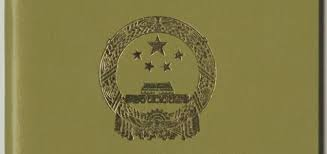 |
| Shutterstock | Chinese Red Stamps: Over 2,258 Royalty-Free Licensable Stock Photos | Shutterstock |  |
| eBay | CHINA - 2 USED STAMPS - NATIONAL EMBLEM - COAT OF ARMS - 1959. | eBay | 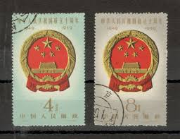 |
| Xabusiness.com | 1979 China Stamps | 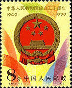 |
| PicClick AU | 1979 STAMP PRC China - 30th Anniversary PRC National Emblem SG2882 Mint MNH MUH $8.00 - PicClick AU | 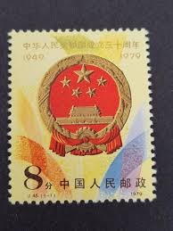 |
| eBay | 2023 149.98g China Silver 2023 150gm China Silver Lunar Rabbit Rectangular PP | eBay | 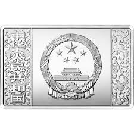 |
| S1736: Grading TP 特1 国徽95分上美品Rm148 | 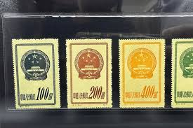 | |
| HipStamp | China Stamp:1979-1500-J45- 30th Anniversary of China-National Emblem ,Mnh Stamp | Asia - China, Stamp / HipStamp |  |
| Coin ID Scanner | Gold Coins Catalog: Values & Price Guide | Coin ID Scanner - Page 534 | 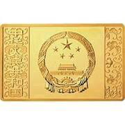 |
| Numista | 15 Yuan (Archery; Piedfort) - People's Republic of China – Numista | 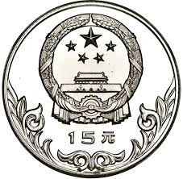 |
| iStock | Rmb 2 China Cent Back Of The Pattern Stock Photo - Download Image Now - Abstract, Abundance, Arabic Script - iStock | 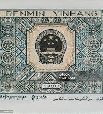 |
| Geneva Collections | Chinese currency of 100 + 10 Yuan 2011 | 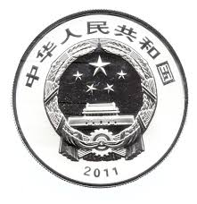 |
| Numista | 10 Yuan (Tibet Autonomous Region) - People's Republic of China – Numista | 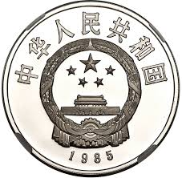 |
| Kennedy Stamps Pty. Ltd. | China 1951 National Emblem SG 1519 – 1523 | 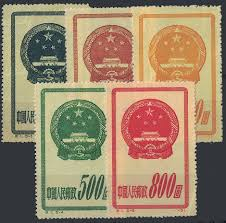 |
| Alamy | Ten yuan note hi-res stock photography and images - Page 2 - Alamy |  |